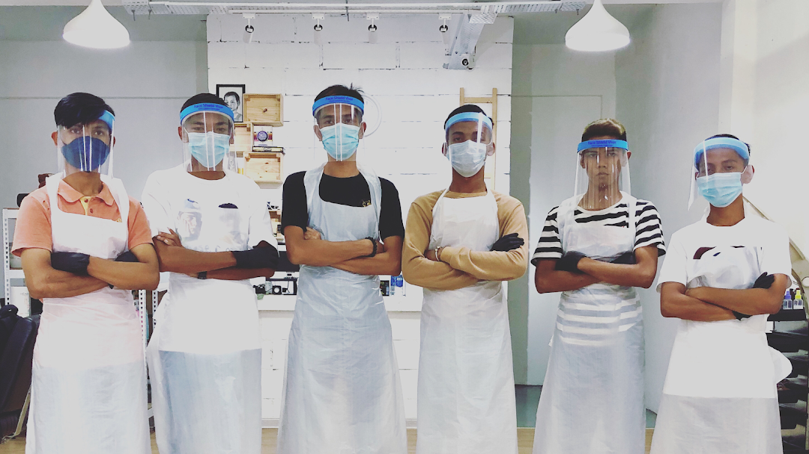

About our business
The Hair Salon & Owners
Established back in August 2018, Studio C Hair & Beauty Salon has a passionate commitment to grooming and offers no-nonsense high quality, value-for-money haircuts, styling and shaving.
PROFESSIONAL YET FRIENDLY STAFF
Studio C Hair & Beauty Salon prides itself on expertly trained friendly staff who offer no fuss, honest advice along with a wide range of hair cuts – from no-nonsense grade ones to a full restyling. Beard trimming and traditional wet shaves are available in many of the salons.
VISIT US TODAY
Studio C Hair & Beauty Salon is now opened for business
Location
3, Jalan Bukit Panchor 1, Taman Bukit Panchor Indah, 14300 Nibong Tebal, Pulau Pinang
Business Hour
Sat - Thu: 2:30pm-12:30am,
Friday: 4:00pm- 12:30am